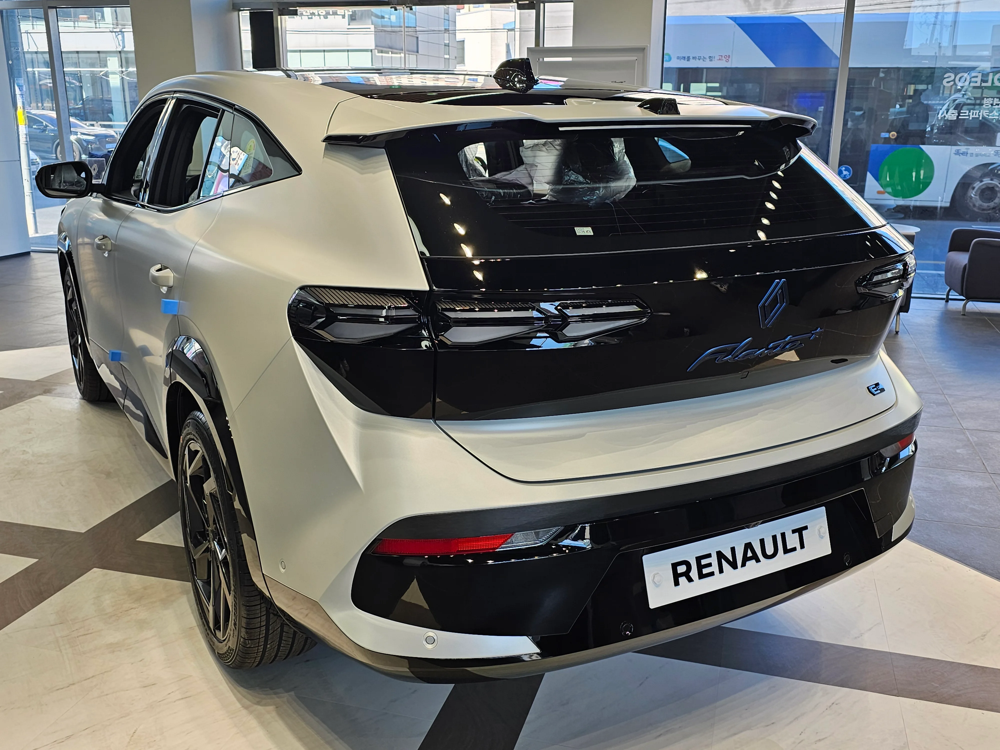
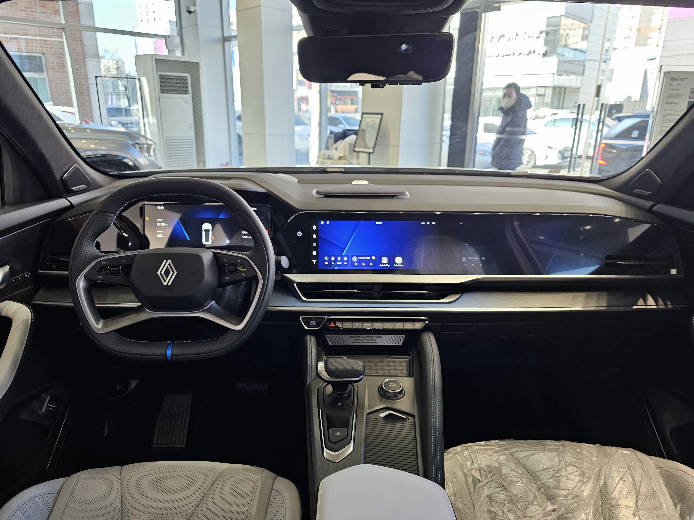
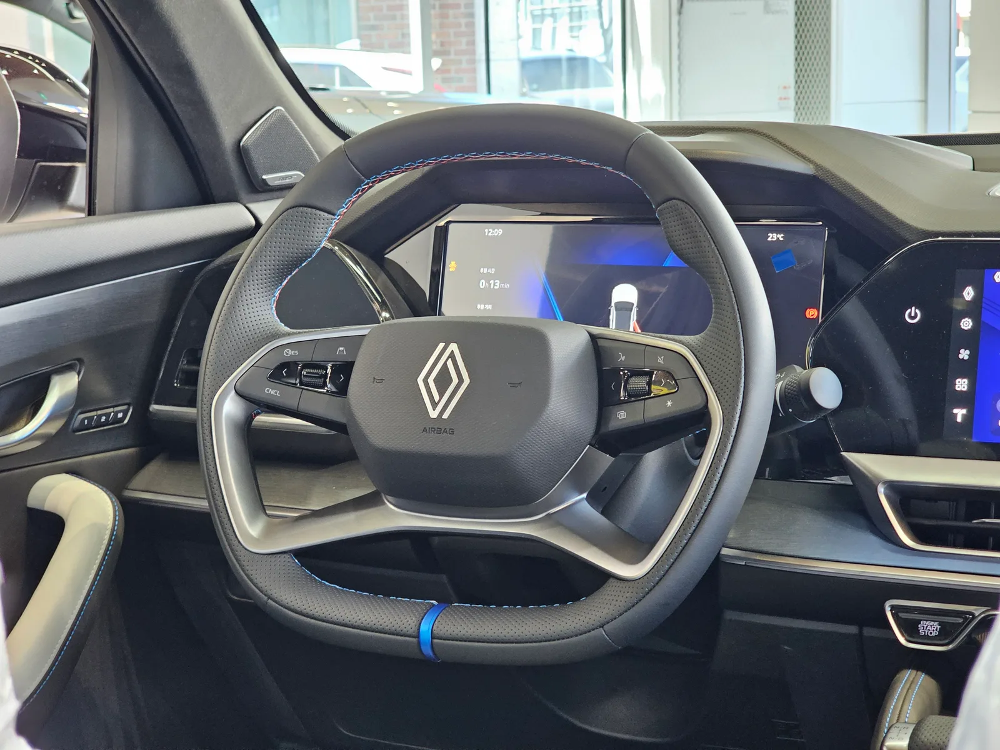

▲ 르노코리아 필랑트 하이브리드 E-테크. 3월 출시 이후 판매량이 4개월 연속 감소했다 ⓒ Wikimedia Commons
르노코리아가 준대형 크로스오버 '필랑트'를 2026년 3월 출시하며 화려하게 시작했지만, 넉 달 만에 판매가 큰 폭으로 꺾였다. 사전예약 7,000대를 기반으로 출시 첫 달 4,920대를 판 이 차는, 7월 537대까지 주저앉으며 전월 대비 59.4% 감소를 기록했다. 무엇이 이 반전을 만들었을까.
1. 숫자로 보는 4개월 — 우하향의 연속
▲ 필랑트는 출시 첫 달 4,920대에서 7월 537대까지 판매가 줄었다 ⓒ Wikimedia Commons
| 월 | 판매량 | 전월 대비 |
|---|---|---|
| 3월 | 4,920대 | 출시월 |
| 4월 | 2,139대 | -56.5% |
| 5월 | 1,201대 | -43.9% |
| 6월 | 1,324대 | +10.2% |
| 7월 | 537대 | -59.4% |
| 8월 | 520대 | -3.2% |
3월 출시 첫 달의 4,920대는 사전예약 7,000대 물량이 반영된 일시적 수치였다. 이후 4월부터는 신규 계약분만으로 판매가 집계되면서 자연스럽게 줄었지만, 6월 소폭 반등(1,324대) 이후 7월 다시 절반 이하로 급감한 것은 단순한 신차효과 소멸만으로는 설명하기 어렵다는 지적이 나온다. 9월 1일 발표된 8월 실적은 520대로, 전월 대비 낙폭이 3.2%에 그치며 하락세가 일단 멈춰 선 모습이다. 다만 반등이라 부르기엔 여전히 출시 첫 달의 10분의 1 수준에 머물러 있다.
2. 원인 — 그랑 콜레오스와의 내부 경쟁

▲ 필랑트 후면. 같은 르노코리아의 그랑 콜레오스와 834만 원 차이로 수요가 겹치는 것이 판매 부진의 한 원인으로 지목된다 ⓒ Wikimedia Commons
가장 자주 언급되는 원인은 같은 르노코리아 라인업 안에서의 자기잠식이다. 필랑트와 그랑 콜레오스의 가격 차이가 834만 원에 불과해, 두 차종이 사실상 같은 예산대의 소비자를 두고 경쟁하는 구조가 됐다. 여기에 상대적으로 저렴한 기본 트림 '테크노'의 출고가 지연되면서, 견적 화면에 뜨는 시작 가격과 실제로 계약 가능한 가격 사이의 괴리가 소비자 이탈로 이어졌다는 분석이다.
3. 르노코리아의 대응 — 보증 확대 카드

▲ 필랑트 실내. 르노코리아는 9월부터 필랑트 구매 고객에게 최대 7년·14만km 보증을 제공하기 시작했다 ⓒ Wikimedia Commons
르노코리아는 이미 9월부터 필랑트와 2027년형 그랑 콜레오스 구매 고객에게 보증을 기존 3년·6만km(차체·일반부품) 수준에서 최대 7년·14만km까지 확대하는 카드를 꺼냈다. 매년 공식 서비스센터에서 무상 점검을 받는 조건이 붙지만, 장기 보유 관점에서 구매 결정을 유도하려는 시도로 풀이된다. 여기에 기본 트림 '테크노'의 공급이 안정화되면 견적과 실제 가격의 괴리도 줄어들 것이라는 전망이 나온다.
4. 반등의 조건
▲ 필랑트 전면 클로즈업. 8월 판매는 520대로 전월 대비 낙폭이 3.2%까지 줄었지만, 출시 첫 달과 비교하면 여전히 10분의 1 수준이다 ⓒ Wikimedia Commons
업계에서는 기본 트림 출고 안정화가 판매 반등의 핵심 관건으로 보고 있다. 저렴한 진입 가격대 물량이 원활히 풀리면 견적 이탈이 줄고, 그랑 콜레오스와의 가격 간섭도 상대적으로 완화될 수 있다는 것이다. 여기에 생산월별 프로모션과 새로 도입된 장기 보증 프로그램이 더해지면서, 9월 판매 흐름이 실제 반등으로 이어질지가 다음 관전 포인트로 남았다.
5. 정리

▲ 필랑트 스티어링 휠. 르노코리아는 9월부터 무상 점검을 조건으로 최대 7년·14만km 보증을 제공한다 ⓒ Wikimedia Commons
체크포인트
- 3월 출시 첫 달 수치는 사전예약 물량이 반영된 일시적 수치였다는 점을 감안해야 한다.
- 그랑 콜레오스와의 834만 원 가격 근접이 내부 경쟁을 유발하고 있다.
- 8월 판매는 520대로 낙폭은 둔화됐지만 반등이라 보기는 이르다.
- 기본 트림 '테크노' 공급 안정화 여부가 9월 이후 반등의 관건이다.